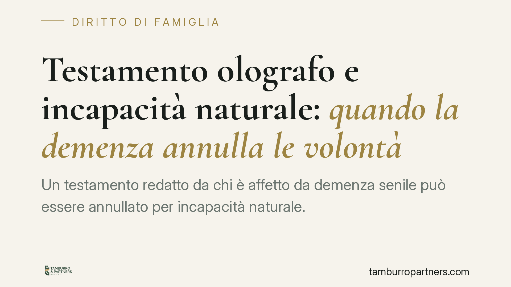

Testamento olografo e incapacità naturale: quando la demenza annulla le volontà
Un testamento redatto da chi è affetto da demenza senile può essere annullato per incapacità naturale. Quando la malattia è permanente e accertata in un periodo prossimo alla redazione, opera una presunzione che sposta sul beneficiario l'onere di dimostrare il lucido intervallo. Una questione che tocca eredi, chi impugna e il terzo che ha acquistato dall'erede apparente.

Il caso e la questione giuridica
Una testatrice redige un testamento olografo (cioè scritto, datato e firmato di proprio pugno). A breve distanza dalla redazione viene accertato uno stato di demenza senile. Gli eredi legittimi impugnano la scheda testamentaria sostenendo che, al momento della scrittura, la de cuius non fosse capace di intendere e di volere.
La domanda centrale è una: su chi grava l'onere di provare la capacità o l'incapacità? La risposta cambia radicalmente l'esito del giudizio.
Il quadro normativo: art. 591 c.c.
L'art. 591, comma 2, n. 3 del Codice civile stabilisce che è incapace di testare chi, pur non interdetto, si provi essere stato, per qualsiasi causa, incapace di intendere e di volere nel momento in cui fece testamento. È la cosiddetta incapacità naturale: non serve una pronuncia di interdizione, basta lo stato di fatto al momento dell'atto.
L'ultimo comma dell'art. 591 c.c. fissa il termine per l'azione di annullamento: cinque anni, decorrenti dal giorno in cui è stata data esecuzione alle disposizioni testamentarie. Un dato da non trascurare, perché il computo non parte dalla morte né dalla pubblicazione del testamento.
Incapacità transitoria e incapacità permanente: due regimi probatori
Qui si gioca la partita. La giurisprudenza di legittimità distingue nettamente due situazioni.
Se l'incapacità è transitoria, chi impugna deve dimostrare che proprio nel momento della redazione la testatrice non era lucida. L'onere della prova resta integralmente sull'attore.
Se invece è accertata un'incapacità permanente e abituale in un periodo prossimo alla data del testamento — come avviene nella demenza senile, patologia tendenzialmente ingravescente — scatta una presunzione di persistenza dello stato di incapacità. In questo caso l'onere si sposta: è il beneficiario che vuole conservare il testamento a dover provare che l'atto fu compiuto in un momento di lucido intervallo.
Tecnicamente non si tratta di una vera e propria inversione legale tipizzata dell'onere della prova, ma di una presunzione semplice che, una volta provata l'incapacità permanente in epoca vicina, trasferisce di fatto sul beneficiario il rischio della mancata prova contraria. L'accertamento di uno stato di demenza a pochissimi giorni dalla redazione è un indizio di notevole peso in questa direzione.
La tutela del terzo acquirente: art. 534 c.c.
L'annullamento del testamento ha effetti a catena. Se l'erede apparente — cioè chi ha ereditato in forza del testamento poi caduto — ha nel frattempo venduto un immobile, cosa accade al compratore?
L'art. 534 c.c. tutela il terzo di buona fede che abbia acquistato a titolo oneroso dall'erede apparente. La norma protegge l'affidamento di chi ha contrattato ignorando il vizio, purché l'acquisto risulti da atto trascritto anteriormente alla trascrizione dell'acquisto da parte dell'erede vero o della domanda giudiziale. In assenza di questi presupposti, l'erede legittimo riconosciuto in giudizio può rivendicare il bene.
Implicazioni pratiche
Per gli eredi legittimi che intendono impugnare: la documentazione clinica prossima alla data del testamento è l'elemento decisivo. Una diagnosi di demenza ravvicinata rafforza enormemente la posizione.
Per il beneficiario nominato nel testamento olografo: non basta la scheda formalmente valida. Occorre essere pronti a dimostrare la lucidità della testatrice in quel preciso frangente.
Per il terzo acquirente: la verifica sulla provenienza del bene e sulle trascrizioni non è un formalismo, ma la condizione della stabilità dell'acquisto.
Cosa fare in concreto
- Reperisci la documentazione sanitaria riferita al periodo immediatamente precedente e successivo alla data del testamento: diagnosi, ricoveri, perizie.
- Verifica il termine quinquennale ex art. 591 ultimo comma c.c., calcolato dall'esecuzione delle disposizioni testamentarie e non dalla morte.
- Controlla le trascrizioni in caso di immobili alienati dall'erede apparente, per valutare la posizione del terzo ai sensi dell'art. 534 c.c.
- Ricostruisci la cronologia degli atti compiuti dalla testatrice nei mesi rilevanti, per individuare eventuali segnali di compromissione.
- Valuta la prova disponibile: la sua consistenza è decisiva, ed è opportuno un esame documentale preliminare prima di ogni determinazione.
Contributo informativo a cura di Tamburro & Partners - Avv. Giuseppe Tamburro. Non costituisce parere legale.
Ogni famiglia ha il suo equilibrio.
Separazione, divorzio, affidamento, assegno: se vuoi un confronto riservato su una specifica situazione, scrivi allo studio. Ti rispondiamo entro un giorno lavorativo.